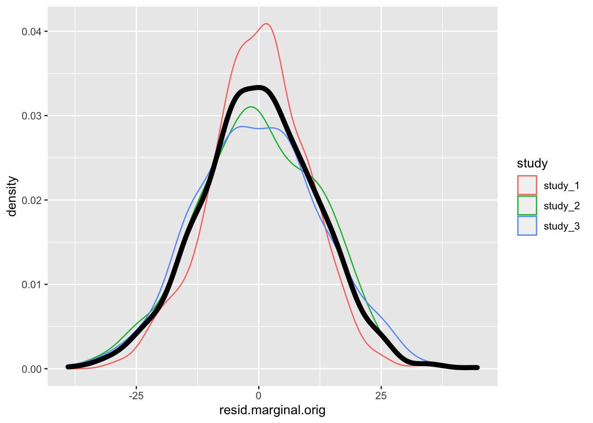
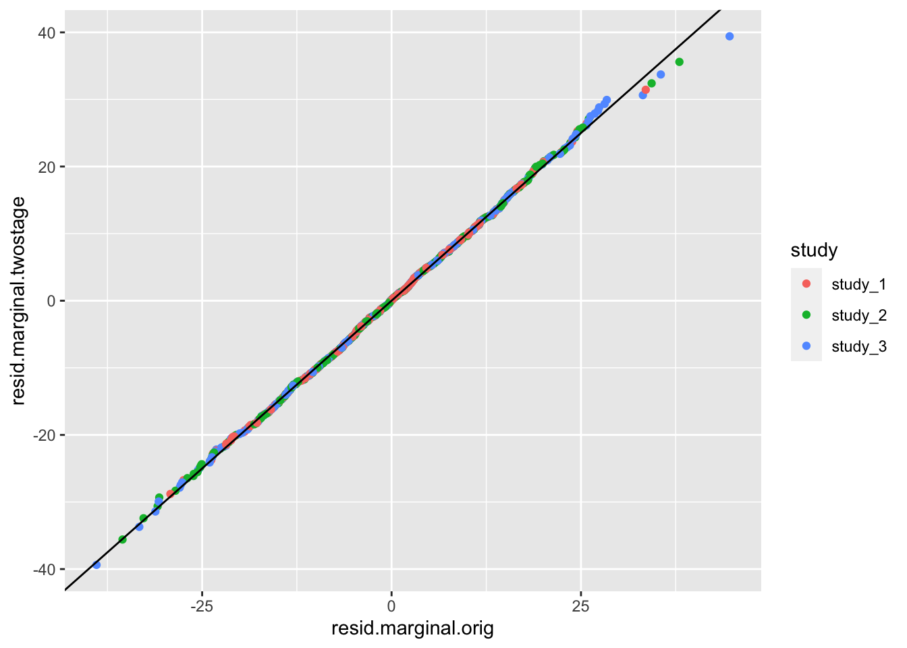

4 Association tests
These exercises introduce genetic association testing: how to identify which genetic variants are associated with a phenotype.
4.1 Null model
The first step in our association testing procedure is to fit the “null model” – i.e., a model fit under the null hypothesis of no individual variant association. Operationally, this is fitting a regression model with the desired outcome phenotype, fixed effect covariates, and random effects.
4.1.1 Prepare the data
To fit the null model, we will need to create an AnnotatedDataFrame with sample information and phenotype data. We will merge our sample annotation file, which is indexed by a sample.id column matched to the GDS file, with our phenotype file, which is indexed by a subject_id column.
NOTE: In this example, we use the 1000 Genomes IDs for both sample and subject IDs, though we would generally advise using separate IDs for samples (sequencing instances) and subjects (individuals).
# sample annotation
repo_path <- "https://github.com/UW-GAC/SISG_2021/raw/master"
if (!dir.exists("data")) dir.create("data")
sampfile <- "data/sample_annotation.RData"
if (!file.exists(sampfile)) download.file(file.path(repo_path, sampfile), sampfile)
samp <- get(load(sampfile))
library(Biobase)## Loading required package: BiocGenerics## Loading required package: parallel##
## Attaching package: 'BiocGenerics'## The following objects are masked from 'package:parallel':
##
## clusterApply, clusterApplyLB, clusterCall, clusterEvalQ,
## clusterExport, clusterMap, parApply, parCapply, parLapply,
## parLapplyLB, parRapply, parSapply, parSapplyLB## The following objects are masked from 'package:stats':
##
## IQR, mad, sd, var, xtabs## The following objects are masked from 'package:base':
##
## anyDuplicated, append, as.data.frame, basename, cbind, colnames,
## dirname, do.call, duplicated, eval, evalq, Filter, Find, get, grep,
## grepl, intersect, is.unsorted, lapply, Map, mapply, match, mget,
## order, paste, pmax, pmax.int, pmin, pmin.int, Position, rank,
## rbind, Reduce, rownames, sapply, setdiff, sort, table, tapply,
## union, unique, unsplit, which.max, which.min## Welcome to Bioconductor
##
## Vignettes contain introductory material; view with
## 'browseVignettes()'. To cite Bioconductor, see
## 'citation("Biobase")', and for packages 'citation("pkgname")'.# access the data with the pData() function
head(pData(samp))## sample.id subject.id Population Population.Description sex status
## 1 HG00096 HG00096 GBR British in England and Scotland M 0
## 2 HG00097 HG00097 GBR British in England and Scotland F 1
## 3 HG00099 HG00099 GBR British in England and Scotland F 0
## 4 HG00100 HG00100 GBR British in England and Scotland F 1
## 5 HG00101 HG00101 GBR British in England and Scotland M 0
## 6 HG00102 HG00102 GBR British in England and Scotland F 0# access the metadata with the varMetadata() function
varMetadata(samp)## labelDescription
## sample.id sample identifier
## subject.id subject identifier
## Population population abbreviation
## Population.Description population description
## sex sex
## status simulated case/control status# phenotype data
phenfile <- "data/phenotype_annotation.RData"
if (!file.exists(phenfile)) download.file(file.path(repo_path, phenfile), phenfile)
phen <- get(load(phenfile))
# access the data with the pData() function
head(pData(phen))## subject_id sex age height study
## 1 HG00096 M 47 165.3 study_1
## 2 HG00102 F 49 169.1 study_1
## 3 HG00112 M 46 167.9 study_1
## 4 HG00114 M 49 169.5 study_1
## 5 HG00115 M 35 161.1 study_1
## 6 HG00116 M 37 182.2 study_1# access the metadata with the varMetadata() function
varMetadata(phen)## labelDescription
## subject_id subject identifier
## sex subject's sex
## age age at measurement of height
## height subject's height in cm
## study study identifier# merge sample annotation with phenotype data
library(dplyr)##
## Attaching package: 'dplyr'## The following object is masked from 'package:Biobase':
##
## combine## The following objects are masked from 'package:BiocGenerics':
##
## combine, intersect, setdiff, union## The following objects are masked from 'package:stats':
##
## filter, lag## The following objects are masked from 'package:base':
##
## intersect, setdiff, setequal, uniondat <- pData(samp) %>%
left_join(pData(phen), by=c("subject.id"="subject_id", "sex"="sex"))
head(dat)## sample.id subject.id Population Population.Description sex status
## 1 HG00096 HG00096 GBR British in England and Scotland M 0
## 2 HG00097 HG00097 GBR British in England and Scotland F 1
## 3 HG00099 HG00099 GBR British in England and Scotland F 0
## 4 HG00100 HG00100 GBR British in England and Scotland F 1
## 5 HG00101 HG00101 GBR British in England and Scotland M 0
## 6 HG00102 HG00102 GBR British in England and Scotland F 0
## age height study
## 1 47 165.300 study_1
## 2 47 144.780 study_3
## 3 40 185.500 study_2
## 4 45 150.622 study_3
## 5 40 177.800 study_3
## 6 49 169.100 study_1# merge the metadata
meta <- bind_rows(varMetadata(samp), varMetadata(phen)[3:5,,drop=FALSE])
# make an AnnotatedDataFrame
annot <- AnnotatedDataFrame(dat, meta)
save(annot, file="data/sample_phenotype_annotation.RData")4.1.2 Fit the null model
We will test for an association between variant genotypes and height, adjusting for sex, age, and study as fixed effect covariates. If the sample set involves multiple distinct groups with different variances for the phenotype, we recommend allowing for heterogeneous residual variance among groups with the group.var parameter. We saw in a previous exercise that the variance of height differs by study.
library(GENESIS)
# fit the null model
nullmod <- fitNullModel(annot,
outcome="height",
covars=c("sex", "age", "study"),
group.var="study",
verbose=FALSE)
save(nullmod, file="data/null_model.RData")The fitNullModel function returns a lot of information about the model that was fit. We examine some of that information below; to see all of the components, try names(nullmod).
# description of the model we fit
nullmod$model## $hetResid
## [1] TRUE
##
## $family
##
## Family: gaussian
## Link function: identity
##
##
## $outcome
## [1] "height"
##
## $covars
## [1] "sex" "age" "study"
##
## $formula
## [1] "height ~ sex + age + study + var(study)"# fixed effect regression estimates
nullmod$fixef## Est SE Stat pval
## (Intercept) 163.67175933 3.18936046 2633.542247 0.000000e+00
## sexM 6.28764509 0.68812251 83.491932 6.397653e-20
## age 0.07519782 0.06921691 1.180283 2.772984e-01
## studystudy_2 10.63152325 0.82176939 167.375182 2.769992e-38
## studystudy_3 -8.96183691 0.84479021 112.537257 2.724959e-26# variance component estimates by group.var
nullmod$varComp## V_study_1 V_study_3 V_study_2
## 98.20191 168.82044 155.70722# model fit: fitted values, residuals
head(nullmod$fit)## outcome workingY fitted.values resid.marginal resid.PY
## HG00096 165.300 165.300 173.4937 -8.193702 -0.08343729
## HG00097 144.780 144.780 158.2442 -13.464220 -0.07975468
## HG00099 185.500 185.500 177.3112 8.188805 0.05259104
## HG00100 150.622 150.622 158.0938 -7.471824 -0.04425900
## HG00101 177.800 177.800 164.0055 13.794520 0.08171119
## HG00102 169.100 169.100 167.3565 1.743547 0.01775472
## resid.cholesky sample.id
## HG00096 -0.8268376 HG00096
## HG00097 -1.0362599 HG00097
## HG00099 0.6562452 HG00099
## HG00100 -0.5750613 HG00100
## HG00101 1.0616810 HG00101
## HG00102 0.1759437 HG00102library(ggplot2)
ggplot(nullmod$fit, aes(x = fitted.values, y = resid.marginal)) +
geom_point(alpha = 0.5) +
geom_hline(yintercept = 0) +
geom_smooth(method = 'lm')## `geom_smooth()` using formula 'y ~ x'
4.1.3 Exercise
- Inverse Normal transform. As discussed in the lecture, we recommend a fully adjusted two-stage inverse Normalization procedure for fitting the null model when phenotypes have non-Normal distributions. Using the
two.stageoption infitNullModel, fit a two-stage null model. Compare these residuals with the residuals from the original null model.
4.1.4 Solution
To run the fully adjusted two.stage null model, we simply set the two.stage option to TRUE. The norm.option parameter determines if the inverse Normalization should be done with all samples together ("all") or within each group.var group separately ("by.group").
nullmod.twostage <- fitNullModel(annot,
outcome="height",
covars=c("sex", "age", "study"),
group.var="study",
two.stage = TRUE,
norm.option = "by.group",
verbose=FALSE)
save(nullmod.twostage, file="data/null_model_two_stage.RData")
# description of the model we fit
nullmod.twostage$model## $hetResid
## [1] TRUE
##
## $family
##
## Family: gaussian
## Link function: identity
##
##
## $outcome
## [1] "height"
##
## $covars
## [1] "sex" "age" "study"
##
## $formula
## [1] "rankInvNorm(resid(height)) ~ sex + age + study + var(study)"# compare the marginal residuals
# merge the data for plotting
pdat <- merge(nullmod$fit, nullmod.twostage$fit,
by = 'sample.id', suffixes = c('.orig', '.twostage'))
pdat <- merge(pdat, pData(annot), by = 'sample.id')
# distribution of residuals - original null model
ggplot(pdat, aes(x = resid.marginal.orig, color = study)) +
geom_density()
# distribution of residuals - two stage null model
ggplot(pdat, aes(x = resid.marginal.twostage, color = study)) +
geom_density()
# compare residuals
ggplot(pdat, aes(x = resid.marginal.orig, y = resid.marginal.twostage, color = study)) +
geom_point() +
geom_abline(intercept = 0, slope = 1)
See Sofer et al. for more information on the fully adjusted two-stage model.
4.2 Single-variant tests
After fitting our null model, we can run association tests to look for a Now that we have a null model adjusting height for covariates, we can run an association test to look for genetic effects on height.
Single-variant tests are the same as in GWAS. We use the assocTestSingle function in GENESIS. First, we have to create a SeqVarData object including both the GDS file and the sample annotation containing phenotypes. We then create a SeqVarBlockIterator object to iterate over blocks of variants.
library(SeqVarTools)## Loading required package: SeqArray## Loading required package: gdsfmtgdsfile <- "data/1KG_phase3_subset_chr1.gds"
if (!file.exists(gdsfile)) download.file(file.path(repo_path, gdsfile), gdsfile)
gdsfmt::showfile.gds(closeall=TRUE) # make sure file is not already open
gds <- seqOpen(gdsfile)
seqData <- SeqVarData(gds, sampleData=annot)
iterator <- SeqVarBlockIterator(seqData, verbose=FALSE)
assoc <- assocTestSingle(iterator, nullmod)## # of selected samples: 1,126head(assoc)## variant.id chr pos allele.index n.obs freq MAC Score
## 1 1 1 970546 1 1126 0.0039964476 9 -0.1191236
## 2 2 1 985900 1 1126 0.0492895204 111 -1.6707553
## 3 3 1 1025045 1 1126 0.0004440497 1 -0.2795838
## 4 4 1 1265550 1 1126 0.0008880995 2 -0.1105487
## 5 5 1 1472676 1 1126 0.0071047957 16 0.3630992
## 6 6 1 1735725 1 1126 0.0022202487 5 -0.1300405
## Score.SE Score.Stat Score.pval Est Est.SE PVE
## 1 0.2577712 -0.4621292 0.643988693 -1.792788 3.879410 0.0001905115
## 2 0.8841849 -1.8895996 0.058811535 -2.137109 1.130985 0.0031851797
## 3 0.1007173 -2.7759261 0.005504472 -27.561563 9.928781 0.0068740102
## 4 0.1085480 -1.0184319 0.308472744 -9.382319 9.212515 0.0009252485
## 5 0.3456555 1.0504657 0.293504065 3.039054 2.893054 0.0009843694
## 6 0.1973175 -0.6590420 0.509868790 -3.340007 5.067973 0.0003874544We make a QQ plot to examine the results.
library(ggplot2)
qqPlot <- function(pval) {
pval <- pval[!is.na(pval)]
n <- length(pval)
x <- 1:n
dat <- data.frame(obs=sort(pval),
exp=x/n,
upper=qbeta(0.025, x, rev(x)),
lower=qbeta(0.975, x, rev(x)))
ggplot(dat, aes(-log10(exp), -log10(obs))) +
geom_line(aes(-log10(exp), -log10(upper)), color="gray") +
geom_line(aes(-log10(exp), -log10(lower)), color="gray") +
geom_point() +
geom_abline(intercept=0, slope=1, color="red") +
xlab(expression(paste(-log[10], "(expected P)"))) +
ylab(expression(paste(-log[10], "(observed P)"))) +
theme_bw()
}
qqPlot(assoc$Score.pval)
4.3 Exercises
- Logistic regression:
fitNullModelcan use a binary phenotype as the outcome variable by specifying the argumentfamily=binomial. Use thestatuscolumn in the sample annotation to fit a null model for simulated case/control status, withsexandPopulationas covariates. Then run a single-variant test using this model.
4.4 Sliding window tests
For rare variants, we can do burden tests or SKAT using the GENESIS function assocTestAggregate. We restrict the test to variants with alternate allele frequency < 0.1. (For real data, this threshold would be lower.) We use a flat weighting scheme. We define a sliding window across the genome using a SeqVarWindowIterator.
seqResetFilter(seqData, verbose=FALSE)
iterator <- SeqVarWindowIterator(seqData, windowSize=5000, windowShift=2000, verbose=FALSE)
assoc <- assocTestAggregate(iterator, nullmod, test="Burden", AF.max=0.1, weight.beta=c(1,1))## # of selected samples: 1,126## Iteration 12 of 1127 completed## Iteration 24 of 1127 completed## Iteration 36 of 1127 completed## Iteration 48 of 1127 completed## Iteration 60 of 1127 completed## Iteration 72 of 1127 completed## Iteration 84 of 1127 completed## Iteration 96 of 1127 completed## Iteration 108 of 1127 completed## Iteration 120 of 1127 completed## Iteration 132 of 1127 completed## Iteration 144 of 1127 completed## Iteration 156 of 1127 completed## Iteration 168 of 1127 completed## Iteration 180 of 1127 completed## Iteration 192 of 1127 completed## Iteration 204 of 1127 completed## Iteration 216 of 1127 completed## Iteration 228 of 1127 completed## Iteration 240 of 1127 completed## Iteration 252 of 1127 completed## Iteration 264 of 1127 completed## Iteration 276 of 1127 completed## Iteration 288 of 1127 completed## Iteration 300 of 1127 completed## Iteration 312 of 1127 completed## Iteration 324 of 1127 completed## Iteration 336 of 1127 completed## Iteration 348 of 1127 completed## Iteration 360 of 1127 completed## Iteration 372 of 1127 completed## Iteration 384 of 1127 completed## Iteration 396 of 1127 completed## Iteration 408 of 1127 completed## Iteration 420 of 1127 completed## Iteration 432 of 1127 completed## Iteration 444 of 1127 completed## Iteration 456 of 1127 completed## Iteration 468 of 1127 completed## Iteration 480 of 1127 completed## Iteration 492 of 1127 completed## Iteration 504 of 1127 completed## Iteration 516 of 1127 completed## Iteration 528 of 1127 completed## Iteration 540 of 1127 completed## Iteration 552 of 1127 completed## Iteration 564 of 1127 completed## Iteration 576 of 1127 completed## Iteration 588 of 1127 completed## Iteration 600 of 1127 completed## Iteration 612 of 1127 completed## Iteration 624 of 1127 completed## Iteration 636 of 1127 completed## Iteration 648 of 1127 completed## Iteration 660 of 1127 completed## Iteration 672 of 1127 completed## Iteration 684 of 1127 completed## Iteration 696 of 1127 completed## Iteration 708 of 1127 completed## Iteration 720 of 1127 completed## Iteration 732 of 1127 completed## Iteration 744 of 1127 completed## Iteration 756 of 1127 completed## Iteration 768 of 1127 completed## Iteration 780 of 1127 completed## Iteration 792 of 1127 completed## Iteration 804 of 1127 completed## Iteration 816 of 1127 completed## Iteration 828 of 1127 completed## Iteration 840 of 1127 completed## Iteration 852 of 1127 completed## Iteration 864 of 1127 completed## Iteration 876 of 1127 completed## Iteration 888 of 1127 completed## Iteration 900 of 1127 completed## Iteration 912 of 1127 completed## Iteration 924 of 1127 completed## Iteration 936 of 1127 completed## Iteration 948 of 1127 completed## Iteration 960 of 1127 completed## Iteration 972 of 1127 completed## Iteration 984 of 1127 completed## Iteration 996 of 1127 completed## Iteration 1008 of 1127 completed## Iteration 1020 of 1127 completed## Iteration 1032 of 1127 completed## Iteration 1044 of 1127 completed## Iteration 1056 of 1127 completed## Iteration 1068 of 1127 completed## Iteration 1080 of 1127 completed## Iteration 1092 of 1127 completed## Iteration 1104 of 1127 completed## Iteration 1116 of 1127 completednames(assoc)## [1] "results" "variantInfo"head(assoc$results)## chr start end n.site n.alt n.sample.alt Score Score.SE Score.Stat
## 1 1 966001 971000 1 9 9 -0.1191236 0.2577712 -0.4621292
## 2 1 982001 987000 1 111 107 -1.6707553 0.8841849 -1.8895996
## 3 1 1022001 1027000 1 1 1 -0.2795838 0.1007173 -2.7759261
## 4 1 1262001 1267000 1 2 2 -0.1105487 0.1085480 -1.0184319
## 5 1 1468001 1473000 1 16 16 0.3630992 0.3456555 1.0504657
## 6 1 1732001 1737000 1 5 5 -0.1300405 0.1973175 -0.6590420
## Score.pval Est Est.SE PVE
## 1 0.643988693 -1.792788 3.879410 0.0001905115
## 2 0.058811535 -2.137109 1.130985 0.0031851797
## 3 0.005504472 -27.561563 9.928781 0.0068740102
## 4 0.308472744 -9.382319 9.212515 0.0009252485
## 5 0.293504065 3.039054 2.893054 0.0009843694
## 6 0.509868790 -3.340007 5.067973 0.0003874544head(assoc$variantInfo)## [[1]]
## variant.id chr pos allele.index n.obs freq MAC weight
## 1 1 1 970546 1 1126 0.003996448 9 1
##
## [[2]]
## variant.id chr pos allele.index n.obs freq MAC weight
## 1 2 1 985900 1 1126 0.04928952 111 1
##
## [[3]]
## variant.id chr pos allele.index n.obs freq MAC weight
## 1 3 1 1025045 1 1126 0.0004440497 1 1
##
## [[4]]
## variant.id chr pos allele.index n.obs freq MAC weight
## 1 4 1 1265550 1 1126 0.0008880995 2 1
##
## [[5]]
## variant.id chr pos allele.index n.obs freq MAC weight
## 1 5 1 1472676 1 1126 0.007104796 16 1
##
## [[6]]
## variant.id chr pos allele.index n.obs freq MAC weight
## 1 6 1 1735725 1 1126 0.002220249 5 1qqPlot(assoc$results$Score.pval)For SKAT, we use the Wu weights.
seqResetFilter(seqData, verbose=FALSE)
iterator <- SeqVarWindowIterator(seqData, windowSize=5000, windowShift=2000, verbose=FALSE)
assoc <- assocTestAggregate(iterator, nullmod, test="SKAT", AF.max=0.1, weight.beta=c(1,25))## # of selected samples: 1,126## Loading required namespace: survey## Loading required namespace: CompQuadForm## Iteration 12 of 1127 completed## Iteration 24 of 1127 completed## Iteration 36 of 1127 completed## Iteration 48 of 1127 completed## Iteration 60 of 1127 completed## Iteration 72 of 1127 completed## Iteration 84 of 1127 completed## Iteration 96 of 1127 completed## Iteration 108 of 1127 completed## Iteration 120 of 1127 completed## Iteration 132 of 1127 completed## Iteration 144 of 1127 completed## Iteration 156 of 1127 completed## Iteration 168 of 1127 completed## Iteration 180 of 1127 completed## Iteration 192 of 1127 completed## Iteration 204 of 1127 completed## Iteration 216 of 1127 completed## Iteration 228 of 1127 completed## Iteration 240 of 1127 completed## Iteration 252 of 1127 completed## Iteration 264 of 1127 completed## Iteration 276 of 1127 completed## Iteration 288 of 1127 completed## Iteration 300 of 1127 completed## Iteration 312 of 1127 completed## Iteration 324 of 1127 completed## Iteration 336 of 1127 completed## Iteration 348 of 1127 completed## Iteration 360 of 1127 completed## Iteration 372 of 1127 completed## Iteration 384 of 1127 completed## Iteration 396 of 1127 completed## Iteration 408 of 1127 completed## Iteration 420 of 1127 completed## Iteration 432 of 1127 completed## Iteration 444 of 1127 completed## Iteration 456 of 1127 completed## Iteration 468 of 1127 completed## Iteration 480 of 1127 completed## Iteration 492 of 1127 completed## Iteration 504 of 1127 completed## Iteration 516 of 1127 completed## Iteration 528 of 1127 completed## Iteration 540 of 1127 completed## Iteration 552 of 1127 completed## Iteration 564 of 1127 completed## Iteration 576 of 1127 completed## Iteration 588 of 1127 completed## Iteration 600 of 1127 completed## Iteration 612 of 1127 completed## Iteration 624 of 1127 completed## Iteration 636 of 1127 completed## Iteration 648 of 1127 completed## Iteration 660 of 1127 completed## Iteration 672 of 1127 completed## Iteration 684 of 1127 completed## Iteration 696 of 1127 completed## Iteration 708 of 1127 completed## Iteration 720 of 1127 completed## Iteration 732 of 1127 completed## Iteration 744 of 1127 completed## Iteration 756 of 1127 completed## Iteration 768 of 1127 completed## Iteration 780 of 1127 completed## Iteration 792 of 1127 completed## Iteration 804 of 1127 completed## Iteration 816 of 1127 completed## Iteration 828 of 1127 completed## Iteration 840 of 1127 completed## Iteration 852 of 1127 completed## Iteration 864 of 1127 completed## Iteration 876 of 1127 completed## Iteration 888 of 1127 completed## Iteration 900 of 1127 completed## Iteration 912 of 1127 completed## Iteration 924 of 1127 completed## Iteration 936 of 1127 completed## Iteration 948 of 1127 completed## Iteration 960 of 1127 completed## Iteration 972 of 1127 completed## Iteration 984 of 1127 completed## Iteration 996 of 1127 completed## Iteration 1008 of 1127 completed## Iteration 1020 of 1127 completed## Iteration 1032 of 1127 completed## Iteration 1044 of 1127 completed## Iteration 1056 of 1127 completed## Iteration 1068 of 1127 completed## Iteration 1080 of 1127 completed## Iteration 1092 of 1127 completed## Iteration 1104 of 1127 completed## Iteration 1116 of 1127 completedhead(assoc$results)## chr start end n.site n.alt n.sample.alt Q pval err
## 1 1 966001 971000 1 9 9 7.318095 0.643988693 0
## 2 1 982001 987000 1 111 107 154.178289 0.058811535 0
## 3 1 1022001 1027000 1 1 1 47.823918 0.005504472 0
## 4 1 1262001 1267000 1 2 2 7.319239 0.308472744 0
## 5 1 1468001 1473000 1 16 16 58.518665 0.293504065 0
## 6 1 1732001 1737000 1 5 5 9.499539 0.509868790 0
## pval.method
## 1 integration
## 2 integration
## 3 integration
## 4 integration
## 5 integration
## 6 integrationhead(assoc$variantInfo)## [[1]]
## variant.id chr pos allele.index n.obs freq MAC weight
## 1 1 1 970546 1 1126 0.003996448 9 22.70917
##
## [[2]]
## variant.id chr pos allele.index n.obs freq MAC weight
## 1 2 1 985900 1 1126 0.04928952 111 7.431881
##
## [[3]]
## variant.id chr pos allele.index n.obs freq MAC weight
## 1 3 1 1025045 1 1126 0.0004440497 1 24.73493
##
## [[4]]
## variant.id chr pos allele.index n.obs freq MAC weight
## 1 4 1 1265550 1 1126 0.0008880995 2 24.47255
##
## [[5]]
## variant.id chr pos allele.index n.obs freq MAC weight
## 1 5 1 1472676 1 1126 0.007104796 16 21.06793
##
## [[6]]
## variant.id chr pos allele.index n.obs freq MAC weight
## 1 6 1 1735725 1 1126 0.002220249 5 23.70132qqPlot(assoc$results$pval)
4.5 Exercise
- Repeat the previous exercise on logistic regression, this time running a sliding-window test.
4.5.1 Association tests - Solutions
- Logistic regression:
fitNullModelcan use a binary phenotype as the outcome variable by specifying the argumentfamily=binomial. Use thestatuscolumn in the sample annotation to fit a null model for simulated case/control status, withsexandPopulationas covariates. Then run a single-variant test using this model.
nullmod.status <- fitNullModel(annot, outcome="status", covars=c("sex", "Population"),
family=binomial, verbose=FALSE)
resetIterator(iterator, verbose=FALSE)
assoc <- assocTestSingle(iterator, nullmod.status, test="Score")## # of selected samples: 1,126## Iteration 12 of 1127 completed## Iteration 24 of 1127 completed## Iteration 36 of 1127 completed## Iteration 48 of 1127 completed## Iteration 60 of 1127 completed## Iteration 72 of 1127 completed## Iteration 84 of 1127 completed## Iteration 96 of 1127 completed## Iteration 108 of 1127 completed## Iteration 120 of 1127 completed## Iteration 132 of 1127 completed## Iteration 144 of 1127 completed## Iteration 156 of 1127 completed## Iteration 168 of 1127 completed## Iteration 180 of 1127 completed## Iteration 192 of 1127 completed## Iteration 204 of 1127 completed## Iteration 216 of 1127 completed## Iteration 228 of 1127 completed## Iteration 240 of 1127 completed## Iteration 252 of 1127 completed## Iteration 264 of 1127 completed## Iteration 276 of 1127 completed## Iteration 288 of 1127 completed## Iteration 300 of 1127 completed## Iteration 312 of 1127 completed## Iteration 324 of 1127 completed## Iteration 336 of 1127 completed## Iteration 348 of 1127 completed## Iteration 360 of 1127 completed## Iteration 372 of 1127 completed## Iteration 384 of 1127 completed## Iteration 396 of 1127 completed## Iteration 408 of 1127 completed## Iteration 420 of 1127 completed## Iteration 432 of 1127 completed## Iteration 444 of 1127 completed## Iteration 456 of 1127 completed## Iteration 468 of 1127 completed## Iteration 480 of 1127 completed## Iteration 492 of 1127 completed## Iteration 504 of 1127 completed## Iteration 516 of 1127 completed## Iteration 528 of 1127 completed## Iteration 540 of 1127 completed## Iteration 552 of 1127 completed## Iteration 564 of 1127 completed## Iteration 576 of 1127 completed## Iteration 588 of 1127 completed## Iteration 600 of 1127 completed## Iteration 612 of 1127 completed## Iteration 624 of 1127 completed## Iteration 636 of 1127 completed## Iteration 648 of 1127 completed## Iteration 660 of 1127 completed## Iteration 672 of 1127 completed## Iteration 684 of 1127 completed## Iteration 696 of 1127 completed## Iteration 708 of 1127 completed## Iteration 720 of 1127 completed## Iteration 732 of 1127 completed## Iteration 744 of 1127 completed## Iteration 756 of 1127 completed## Iteration 768 of 1127 completed## Iteration 780 of 1127 completed## Iteration 792 of 1127 completed## Iteration 804 of 1127 completed## Iteration 816 of 1127 completed## Iteration 828 of 1127 completed## Iteration 840 of 1127 completed## Iteration 852 of 1127 completed## Iteration 864 of 1127 completed## Iteration 876 of 1127 completed## Iteration 888 of 1127 completed## Iteration 900 of 1127 completed## Iteration 912 of 1127 completed## Iteration 924 of 1127 completed## Iteration 936 of 1127 completed## Iteration 948 of 1127 completed## Iteration 960 of 1127 completed## Iteration 972 of 1127 completed## Iteration 984 of 1127 completed## Iteration 996 of 1127 completed## Iteration 1008 of 1127 completed## Iteration 1020 of 1127 completed## Iteration 1032 of 1127 completed## Iteration 1044 of 1127 completed## Iteration 1056 of 1127 completed## Iteration 1068 of 1127 completed## Iteration 1080 of 1127 completed## Iteration 1092 of 1127 completed## Iteration 1104 of 1127 completed## Iteration 1116 of 1127 completedhead(assoc)## variant.id chr pos allele.index n.obs freq MAC Score
## 1 1 1 970546 1 1126 0.0039964476 9 0.20256722
## 2 2 1 985900 1 1126 0.0492895204 111 -2.64169956
## 3 3 1 1025045 1 1126 0.0004440497 1 -0.09916904
## 4 4 1 1265550 1 1126 0.0008880995 2 0.81717324
## 5 5 1 1472676 1 1126 0.0071047957 16 0.64418361
## 6 6 1 1735725 1 1126 0.0022202487 5 -0.46319177
## Score.SE Score.Stat Score.pval Est Est.SE PVE
## 1 0.8351783 0.2425437 0.80835892 0.2904095 1.1973491 5.242118e-05
## 2 2.6522412 -0.9960254 0.31923781 -0.3755410 0.3770396 8.840314e-04
## 3 0.2972472 -0.3336248 0.73866267 -1.1223819 3.3642035 9.918446e-05
## 4 0.4033577 2.0259271 0.04277226 5.0226565 2.4791892 3.657417e-03
## 5 1.0778277 0.5976685 0.55006117 0.5545121 0.9277921 3.183080e-04
## 6 0.6396675 -0.7241134 0.46899613 -1.1320153 1.5633123 4.672400e-04- Repeat the previous exercise on logistic regression, this time running a sliding-window test.
nullmod.status <- fitNullModel(annot, outcome="status", covars=c("sex", "Population"),
family=binomial, verbose=FALSE)
seqResetFilter(seqData, verbose=FALSE)
iterator <- SeqVarWindowIterator(seqData, windowSize=5000, windowShift=2000, verbose=FALSE)
assoc <- assocTestAggregate(iterator, nullmod, test="SKAT", AF.max=0.1, weight.beta=c(1,25))## # of selected samples: 1,126## Iteration 12 of 1127 completed## Iteration 24 of 1127 completed## Iteration 36 of 1127 completed## Iteration 48 of 1127 completed## Iteration 60 of 1127 completed## Iteration 72 of 1127 completed## Iteration 84 of 1127 completed## Iteration 96 of 1127 completed## Iteration 108 of 1127 completed## Iteration 120 of 1127 completed## Iteration 132 of 1127 completed## Iteration 144 of 1127 completed## Iteration 156 of 1127 completed## Iteration 168 of 1127 completed## Iteration 180 of 1127 completed## Iteration 192 of 1127 completed## Iteration 204 of 1127 completed## Iteration 216 of 1127 completed## Iteration 228 of 1127 completed## Iteration 240 of 1127 completed## Iteration 252 of 1127 completed## Iteration 264 of 1127 completed## Iteration 276 of 1127 completed## Iteration 288 of 1127 completed## Iteration 300 of 1127 completed## Iteration 312 of 1127 completed## Iteration 324 of 1127 completed## Iteration 336 of 1127 completed## Iteration 348 of 1127 completed## Iteration 360 of 1127 completed## Iteration 372 of 1127 completed## Iteration 384 of 1127 completed## Iteration 396 of 1127 completed## Iteration 408 of 1127 completed## Iteration 420 of 1127 completed## Iteration 432 of 1127 completed## Iteration 444 of 1127 completed## Iteration 456 of 1127 completed## Iteration 468 of 1127 completed## Iteration 480 of 1127 completed## Iteration 492 of 1127 completed## Iteration 504 of 1127 completed## Iteration 516 of 1127 completed## Iteration 528 of 1127 completed## Iteration 540 of 1127 completed## Iteration 552 of 1127 completed## Iteration 564 of 1127 completed## Iteration 576 of 1127 completed## Iteration 588 of 1127 completed## Iteration 600 of 1127 completed## Iteration 612 of 1127 completed## Iteration 624 of 1127 completed## Iteration 636 of 1127 completed## Iteration 648 of 1127 completed## Iteration 660 of 1127 completed## Iteration 672 of 1127 completed## Iteration 684 of 1127 completed## Iteration 696 of 1127 completed## Iteration 708 of 1127 completed## Iteration 720 of 1127 completed## Iteration 732 of 1127 completed## Iteration 744 of 1127 completed## Iteration 756 of 1127 completed## Iteration 768 of 1127 completed## Iteration 780 of 1127 completed## Iteration 792 of 1127 completed## Iteration 804 of 1127 completed## Iteration 816 of 1127 completed## Iteration 828 of 1127 completed## Iteration 840 of 1127 completed## Iteration 852 of 1127 completed## Iteration 864 of 1127 completed## Iteration 876 of 1127 completed## Iteration 888 of 1127 completed## Iteration 900 of 1127 completed## Iteration 912 of 1127 completed## Iteration 924 of 1127 completed## Iteration 936 of 1127 completed## Iteration 948 of 1127 completed## Iteration 960 of 1127 completed## Iteration 972 of 1127 completed## Iteration 984 of 1127 completed## Iteration 996 of 1127 completed## Iteration 1008 of 1127 completed## Iteration 1020 of 1127 completed## Iteration 1032 of 1127 completed## Iteration 1044 of 1127 completed## Iteration 1056 of 1127 completed## Iteration 1068 of 1127 completed## Iteration 1080 of 1127 completed## Iteration 1092 of 1127 completed## Iteration 1104 of 1127 completed## Iteration 1116 of 1127 completedhead(assoc$results)## chr start end n.site n.alt n.sample.alt Q pval err
## 1 1 966001 971000 1 9 9 7.318095 0.643988693 0
## 2 1 982001 987000 1 111 107 154.178289 0.058811535 0
## 3 1 1022001 1027000 1 1 1 47.823918 0.005504472 0
## 4 1 1262001 1267000 1 2 2 7.319239 0.308472744 0
## 5 1 1468001 1473000 1 16 16 58.518665 0.293504065 0
## 6 1 1732001 1737000 1 5 5 9.499539 0.509868790 0
## pval.method
## 1 integration
## 2 integration
## 3 integration
## 4 integration
## 5 integration
## 6 integrationseqClose(gds)